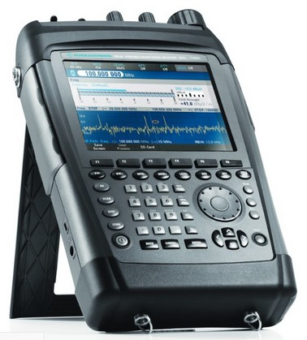

Network users demand excellent reception and performance wherever they go. Being connected at all times is key. To meet these demands, network operators need to constantly stay ahead of the technology curve, and all parts of thenetwork must function properly.
With Rohde & Schwarz test and measurement solutions, you are well equipped to maintain the high quality of service needed for lasting customer satisfaction and confidence. Our solutions are a unique combination of high performance and lowtotal cost of ownership thanks to our personal service and support, and to our instruments’ reliability, modular design and extensibility to new standards. Our family of handheld instruments are an ideal example of these advantages. The instruments are not only lightweight, rugged and simple to operate, they also excel in terms of scalability and unique features. They help field engineers and technicians to work faster, easier and more precisely when installing, maintaining and troubleshooting antenna and transmitter systems. Accelerate your time to market and stay ahead of the competition.
A lightweight, simple-to-operate cable and antenna analyzer designed specifically for use in the field, the R&S®ZVH performs fast, reliable and highly accurate measurements to support RF service engineers and technicians when installing and maintaining antenna systems for mobile radio. The built-in wizard allows users to run even complex test sequences quickly and easily.
The R&S®PR100 is a portable receiver for “catching” interfering signals that are not obvious in the spectrum because of their pulsed, hopping or unstable timing behavior. Interference signals negatively impact radio networks. In some scenarios they will drastically reduce the data rate or significantly increase the number of dropped calls. Its realtime properties enable the R&S®PR100 to easily identify these unknown signals over a very wide bandwidth. The receiver’s compact design, low weight and battery operation, together with the ̧HE 300 handheld directional antenna, make it ideal for field operation wherever needed.
Sources of interference must be located quickly since they limit or even block radiocommunications services. The fastest and easiest way to locate interference is homing with mobile direction finders (DF). The new R&S®DDF 007 portable direction finder turns a standard vehicle into a mobile DF within minutes. The compact R&S®ADD 107 (VHF/UHF) and R&S®ADD 207 (UHF/SHF) DF antennas with integrated GPS modules are quickly installed on the vehicle roof using a magnetic mount adapter.